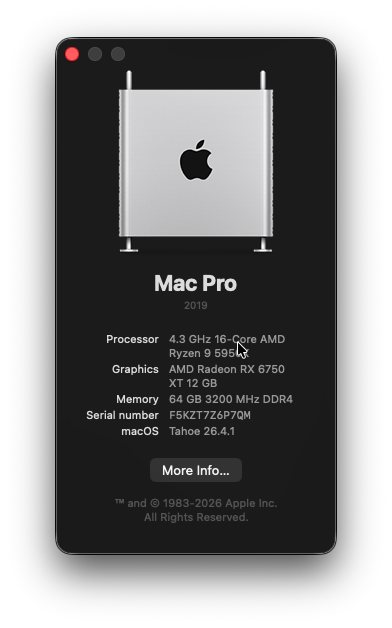
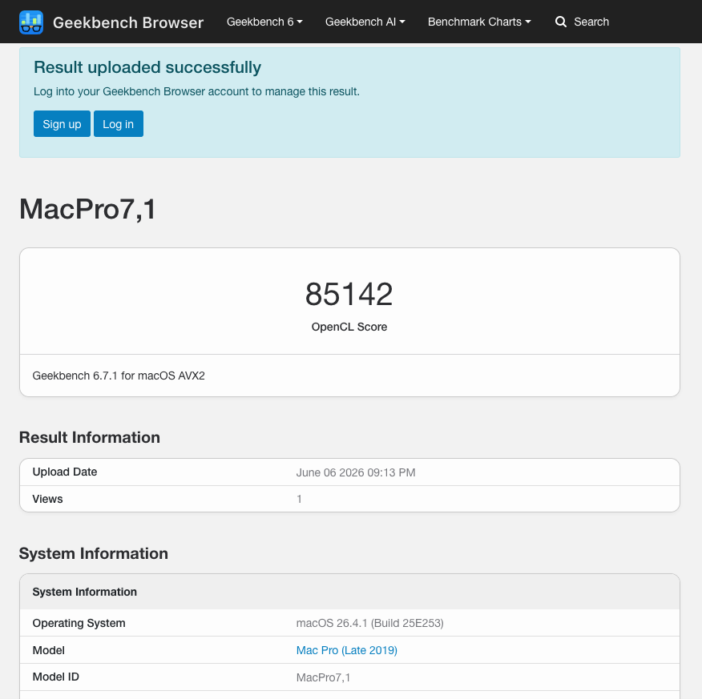
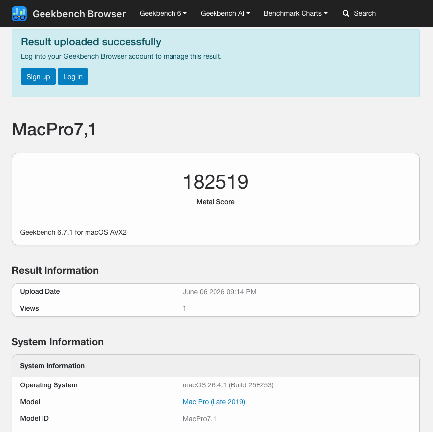

Hackintosh. Done right.
AMD Ryzen 5950X and RX 6750 XT, fully running native macOS. Custom EFI built from scratch — ACPI hot-patches, SSDTs, and kexts — stable enough to daily-drive.
View EFI on GitHub →The Build
B550 motherboard · Ryzen 5950X · RX 6750 XT
5950X

16 cores. 32 threads. On macOS.
The Ryzen 5950X is fully recognized and correctly scheduled by macOS — no emulation, no fake CPU IDs. Getting AMD CPUs stable requires custom SSDTs for power management, CPPC patches, and precision ACPI configuration. This build runs daily Xcode sessions and heavy compilation without a crash.

RX 6750 XT. Full Metal & OpenCL.
AMD GPUs are natively supported in macOS — no GPU patching required. The 6750 XT runs full Metal acceleration, OpenCL compute, hardware video encode/decode, and DRM. Framebuffer configuration handles clean boot screens, artefact-free sleep/wake, and multi-display without issues.

Numbers that speak for themselves.
The Metal compute score puts this machine ahead of most stock Apple configurations at the same price. Every point is the result of EFI tuning, power state optimization, and stability testing. It doesn't just boot macOS — it runs it faster than machines Apple ships with macOS pre-loaded.
Open-Source EFI
The complete EFI for this B550 · Ryzen 5950X · RX 6750 XT build is public on GitHub. All SSDTs, kexts, and a documented config.plist — fork it, adapt it, build your own.
github.com/dssoftx/B550-5950X-6750XT-Hackintosh →